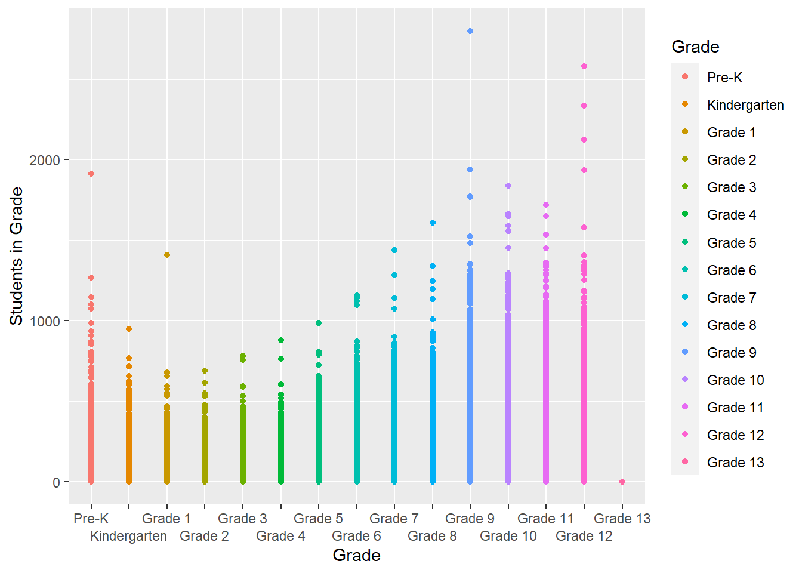

library(tidyverse)
library(ggplot2)
library(summarytools)
knitr::opts_chunk$set(echo = TRUE, warning=FALSE, message=FALSE)Challenge 5
challenge_5
Aleacia Messiah
public_schools
tidyverse
ggplot2
summarytools
Introduction to Visualization
Challenge Overview
Today’s challenge is to:
- read in a data set, and describe the data set using both words and any supporting information (e.g., tables, etc)
- tidy data (as needed, including sanity checks)
- mutate variables as needed (including sanity checks)
- create at least two univariate visualizations
- try to make them “publication” ready
- Explain why you choose the specific graph type
- Create at least one bivariate visualization
- try to make them “publication” ready
- Explain why you choose the specific graph type
R Graph Gallery is a good starting point for thinking about what information is conveyed in standard graph types, and includes example R code.
(be sure to only include the category tags for the data you use!)
Read in data
Read in one (or more) of the following datasets, using the correct R package and command.
- cereal.csv ⭐
- Total_cost_for_top_15_pathogens_2018.xlsx ⭐
- Australian Marriage ⭐⭐
- AB_NYC_2019.csv ⭐⭐⭐
- StateCounty2012.xls ⭐⭐⭐
- Public School Characteristics ⭐⭐⭐⭐
- USA Households ⭐⭐⭐⭐⭐
# read in school dataset, rename columns, and skip the first row
school <- read_csv("_data/Public_School_Characteristics_2017-18.csv",
col_names = c(rep("delete", 4), "County", "delete",
"delete", "delete", "delete", "Agency",
"School", "Street 1", "Street 2", "Street 3",
"City", "State", "ZIP Code", "ZIP Code 2",
"Phone", "delete", "delete", "Virtual School",
"delete", "Free Lunch Program", "Reduced-Price Lunch Program", "Pre-K", "Kindergarten", "Grade 1", "Grade 2", "Grade 3", "Grade 4",
"Grade 5", "Grade 6", "Grade 7", "Grade 8",
"Grade 9", "Grade 10", "Grade 11", "Grade 12",
"Grade 13", rep("delete", 8), "Total Teachers",
"Latitude", "Longitude", "Locale Code",
"Student/Teacher Ratio", "School-Wide Title 1",
"American Indian/Alaska Native - Male",
"American Indian/Alaska Native - Female",
"Asian/Pacific Islander - Male",
"Asian/Pacific Islander - Female",
"Hispanic - Male", "Hispanic - Female",
"Black - Male", "Black - Female",
"White - Male", "White - Female",
"Hawaiian Native/Pacific Islander - Male",
"Hawaiian Native/Pacific Islander - Female",
"Two or More Races - Male",
"Two or More Races - Female",
"delete", "delete", "delete", "Ungraded Students",
"Adult Education Students", "School Type",
"Status", "School Level", "delete",
"Charter School", "Magnet School"), skip = 1)
# view the first several rows of school
head(school)# A tibble: 6 × 79
delete…¹ delet…² delet…³ delet…⁴ County delet…⁵ delet…⁶ delet…⁷ delet…⁸ Agency
<dbl> <dbl> <dbl> <chr> <chr> <chr> <chr> <chr> <chr> <chr>
1 -149. 61.6 1 020051… Matan… 2017-2… AK 0200510 AK-33 Matan…
2 -157. 71.3 2 020061… North… 2017-2… AK 0200610 AK-36 North…
3 -151. 60.5 3 020039… Kenai… 2017-2… AK 0200390 AK-24 Kenai…
4 -151. 60.6 4 020039… Kenai… 2017-2… AK 0200390 AK-24 Kenai…
5 -151. 60.6 5 020039… Kenai… 2017-2… AK 0200390 AK-24 Kenai…
6 -133. 56.1 6 020070… Princ… 2017-2… AK 0200700 AK-44 South…
# … with 69 more variables: School <chr>, `Street 1` <chr>, `Street 2` <chr>,
# `Street 3` <lgl>, City <chr>, State <chr>, `ZIP Code` <chr>,
# `ZIP Code 2` <chr>, Phone <chr>, delete...20 <chr>, delete...21 <chr>,
# `Virtual School` <chr>, delete...23 <dbl>, `Free Lunch Program` <dbl>,
# `Reduced-Price Lunch Program` <dbl>, `Pre-K` <dbl>, Kindergarten <dbl>,
# `Grade 1` <dbl>, `Grade 2` <dbl>, `Grade 3` <dbl>, `Grade 4` <dbl>,
# `Grade 5` <dbl>, `Grade 6` <dbl>, `Grade 7` <dbl>, `Grade 8` <dbl>, …Briefly describe the data
According to the code book for Public School Characteristics 2017-2018, this dataset contains various amounts of data ranging from point locations (latitude and longitude) to student demographics for public elementary and secondary schools included in the NCES Common Core of Data (CCD). There are 100,729 observations and 79 variables (NCESSCH, SURVYEAR, SCH_NAME, PHONE, VIRTUAL, etc.).
Tidy Data (as needed)
Is your data already tidy, or is there work to be done? Be sure to anticipate your end result to provide a sanity check, and document your work here.
Note
I ran into issues trying to pivot longer the lunch program columns, race/ethnicity columns, and school type columns since RStudio kept giving me an error that the memory was exhausted with over 15 million observations, so I had to omit tidying those columns in order for RStudio to run correctly. The code chunks I used for pivoting those columns are commented-out.
school_clean <- school %>%
# remove columns named "delete"
select(!contains("delete")) %>%
# combine the street, city, state, and zip code columns into one Address column
unite("Street 1":"ZIP Code 2", col = "Address", sep = "/", na.rm = TRUE) %>%
# combine lunch program columns into one column
# pivot_longer(cols = "Free Lunch Program":"Reduced-Price Lunch Program", names_to = "Lunch Program", values_to = "Students in Lunch Program") %>%
# combine grade columns into one column
pivot_longer(cols = "Pre-K":"Grade 13", names_to = "Grade", values_to = "Students in Grade") %>%
# combine school type columns into one column
# pivot_longer(cols = c("Virtual School", "School Type", "School Level", "Charter School", "Magnet School"), names_to = "Type of School", values_to = "Value") %>%
# combine race/ethnicity columns into one column
# pivot_longer(cols = "American Indian/Alaska Native - Male":"Two or More Races - Female", names_to = "Race/Ethnicity", values_to = "Students with Race/Ethnicity")
# replace certain values with NA
na_if("-1") %>%
na_if("M") %>%
na_if("-2") %>%
na_if("N") %>%
na_if("-9")
# view school_clean dataset
school_clean# A tibble: 1,510,935 × 37
County Agency School Address Phone Virtu…¹ Free …² Reduc…³ Total…⁴ Latit…⁵
<chr> <chr> <chr> <chr> <chr> <chr> <dbl> <dbl> <dbl> <dbl>
1 Matanusk… Matan… John … 3750 E… (907… Not a … 158 25 24.9 61.6
2 Matanusk… Matan… John … 3750 E… (907… Not a … 158 25 24.9 61.6
3 Matanusk… Matan… John … 3750 E… (907… Not a … 158 25 24.9 61.6
4 Matanusk… Matan… John … 3750 E… (907… Not a … 158 25 24.9 61.6
5 Matanusk… Matan… John … 3750 E… (907… Not a … 158 25 24.9 61.6
6 Matanusk… Matan… John … 3750 E… (907… Not a … 158 25 24.9 61.6
7 Matanusk… Matan… John … 3750 E… (907… Not a … 158 25 24.9 61.6
8 Matanusk… Matan… John … 3750 E… (907… Not a … 158 25 24.9 61.6
9 Matanusk… Matan… John … 3750 E… (907… Not a … 158 25 24.9 61.6
10 Matanusk… Matan… John … 3750 E… (907… Not a … 158 25 24.9 61.6
# … with 1,510,925 more rows, 27 more variables: Longitude <dbl>,
# `Locale Code` <chr>, `Student/Teacher Ratio` <dbl>,
# `School-Wide Title 1` <chr>, `American Indian/Alaska Native - Male` <dbl>,
# `American Indian/Alaska Native - Female` <dbl>,
# `Asian/Pacific Islander - Male` <dbl>,
# `Asian/Pacific Islander - Female` <dbl>, `Hispanic - Male` <dbl>,
# `Hispanic - Female` <dbl>, `Black - Male` <dbl>, `Black - Female` <dbl>, …Are there any variables that require mutation to be usable in your analysis stream? For example, do you need to calculate new values in order to graph them? Can string values be represented numerically? Do you need to turn any variables into factors and reorder for ease of graphics and visualization?
Document your work here.
# change Status to a factor
school_clean$Status <- factor(school_clean$Status)
# change Grade to a factor
school_clean$Grade <- factor(school_clean$Grade, levels = c("Pre-K", "Kindergarten", "Grade 1", "Grade 2", "Grade 3", "Grade 4", "Grade 5", "Grade 6", "Grade 7", "Grade 8", "Grade 9", "Grade 10", "Grade 11", "Grade 12", "Grade 13"))Univariate Visualizations
# create a bar graph based on School Level
ggplot(school, aes(`School Level`, fill = `School Level`)) +
geom_bar(na.rm = TRUE) +
guides(x = guide_axis(n.dodge = 2))
# create a histogram based on Total Teachers
ggplot(school, aes(`Total Teachers`)) +
geom_histogram(na.rm = TRUE)
I chose a bar graph for School Level because this variable is discrete and can represent the different counts for each school level the best, in which Elementary schools have the highest count followed by High, Middle, and Not Reported. I created a histogram for Total Teachers because this variable is continuous unlike School Level and a histogram best portrays the distribution of teachers in total, where the vast majority of schools have a total number of teachers in the 25-50 range.
Bivariate Visualization(s)
# create a scatterplot with Students in Grade against Grade
ggplot(school_clean, aes(Grade, `Students in Grade`, color = Grade)) +
geom_point(na.rm = TRUE) +
guides(x = guide_axis(n.dodge = 2))
I chose a scatterplot with Students in Grade against Grade because these two variables (one categorical and one numerical) with a legend indicating which colors are assigned with each grade are best visualized with a scatterplot. It appears that there are quite a few students in Grade 9 followed by Grade 12, Pre-K, and Grade 10.